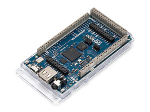
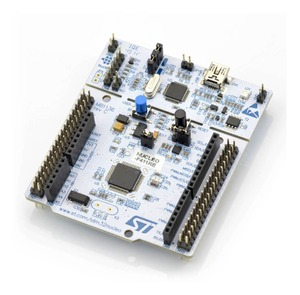
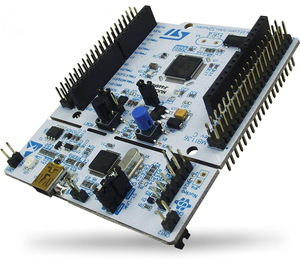
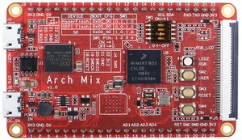
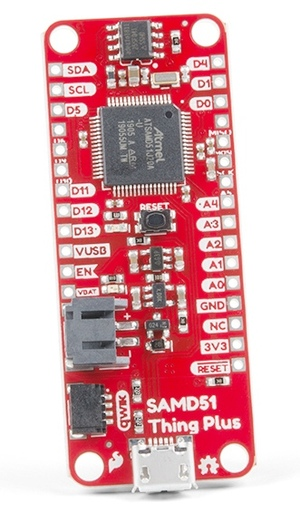

MicroPython downloads
MicroPython is developed using git for source code management, and the master repository can be found on GitHub at github.com/micropython/micropython.
The full source-code distribution of the latest version is available for download here:
Daily snapshots of the GitHub repository (not including submodules) are available from this server:
Firmware for various microcontroller ports and boards are built automatically on a daily basis and can be found below.
Filter by:
Port: cc3200, esp32, esp8266, mimxrt, nrf, renesas-ra, rp2, samd, stm32
Feature: 10/100 Ethernet Phy, 16MB Flash, 1MB SPI Flash, 2x80 pin HD connectors, 8MB SDRAM, ADC, AudioAmp, AudioCodec, BLE, Battery Charging, Battery Management, Bluetooth 5.0, Bluetooth Nina-W102, Breadboard Friendly, Breadboard friendly, CAN, CYW43 WiFi/BT Module, Camera, Castellated Pads, Crypto IC ARM CC310, Crypto IC ATECC608A-MAHDA-T, Display, DisplayPort over USB-C, Dual-core processor, Ethernet, Feather, Grove, Humidity sensor HTS221, I2C, IMU, IMU LSM6DS3TR, IMU LSM6DSOXTR, IMU LSM9DS1, Infrared, JLink, LoRa, Micro USB, MicroSD, MicroUSB, Microphone, Microphone MP34DT05, Microphone MPM3610, Microphone MSM261D3526H1CPM, NXP SE050 crypto device, OLED, OpenSDA, PoE, Pressure sensor LPS22H, Proximity, Light, RGB sensor APDS-9960, QSPI Flash, QWIIC, RGB LED, Red/green/orange/blue leds, Reset/User button, SDCard, SDRAM, SIM Socket, SPDIF, SPI, SPI Flash, SPI Flash 16MB, SPIRAM, STEMMA QT/QWIIC, UART, USB Full speed, USB High Speed Phy, USB Stick form factor, USB-A, USB-C, USB-MICRO, WiFi, WiFi Nina-W102, mikroBUS
Vendor: Actinius, Adafruit, Arduino, BBC, Espressif, Espruino, George Robotics, I-SYST, LEGO, LILYGO, Laird Connectivity, Lego, M5 Stack, McHobby, Microchip, MikroElektronika, MiniFig Boards, NXP, Nordic Semiconductor, OLIMEX, PJRC, Particle, Pimoroni, Pycom, Raspberry Pi, Renesas Electronics, ST Microelectronics, Seeed Studio, Seeed Technology Co.,Ltd., Silicognition LLC, Sparkfun, Unexpected Maker, Unknown, VCC-GND Studio, WeAct, Wemos, Wireless-Tag, Wiznet, nullbits, u-blox
MCU: RA4M1, RA4W1, RA6M1, RA6M2, RP2040, STM32H747, cc3200, esp32, esp32c3, esp32s2, esp32s3, esp8266, mimxrt, nRF52840, nrf51, nrf52, nrf91, rp2040, samd21, samd51, stm32, stm32f0, stm32f4, stm32f7, stm32g0, stm32g4, stm32h7, stm32l0, stm32l1, stm32l4, stm32wb, stm32wl
Pyboard D-series SF2
George Robotics
Pyboard D-series SF3
George Robotics
Pyboard D-series SF6
George Robotics
Pyboard Lite v1.0
George Robotics
Pyboard v1.0
George Robotics
Pyboard v1.1
George Robotics
actinius_icarus
Actinius
F405 Express
Adafruit
Feather M0 Express
Adafruit
Feather M4 Express
Adafruit
Feather RP2040
Adafruit
Feather nRF52840 Express
Adafruit
ItsyBitsy M0 Express
Adafruit
ItsyBitsy M4 Express
Adafruit
ItsyBitsy RP2040
Adafruit
QT Py RP2040
Adafruit
Trinket M0
Adafruit

Arduino Giga
Arduino
Arduino Nano 33 BLE Sense
Arduino
Arduino Nano RP2040 Connect
Arduino
Arduino Nicla Vision
Arduino
Arduino Portenta H7
Arduino
micro:bit v1
BBC
ESP32
Espressif
ESP32 D2WD
Espressif

ESP32 Unicore
Espressif

ESP32 with OTA support
Espressif
ESP32 with SPIRAM
Espressif
ESP32-C3
Espressif

ESP32-C3 with USB
Espressif
ESP32-S2
Espressif
ESP32-S2 WROVER
Espressif
ESP32-S3
Espressif
ESP8266 with 1MiB flash
Espressif
ESP8266 with 2MiB+ flash
Espressif
ESP8266 with 512kiB flash
Espressif

Generic ESP32-S3 (SPIRAM Octal)
Espressif

Generic ESP32-S3 (SPIRAM)
Espressif

Pico
Espruino
blueio_tag_evim
I-SYST

ibk_blyst_nano
I-SYST
idk_blyst_nano
I-SYST
Hub No.7
LEGO
LILYGO TTGO LoRa32
LILYGO
dvk_bl652
Laird Connectivity
Hub No.6
Lego
M5 Stack Atom
M5 Stack
GARATRONIC_NADHAT_F405
McHobby
GARATRONIC_PYBSTICK26_F411
McHobby
PYBSTICK26 RP2040
McHobby

SAMD21 Xplained Pro
Microchip
MikroE Clicker 2 for STM32
MikroElektronika
MikroE Quail
MikroElektronika
Mikroe RA4M1 Clicker
MikroElektronika
Mini SAM M4
MiniFig Boards
MIMXRT1010_EVK
NXP
MIMXRT1015_EVK
NXP
MIMXRT1020_EVK
NXP
MIMXRT1050_EVK
NXP
MIMXRT1060_EVK
NXP
MIMXRT1064_EVK
NXP
MIMXRT1170_EVK
NXP
pca10000
Nordic Semiconductor

pca10001
Nordic Semiconductor
pca10028
Nordic Semiconductor

pca10031
Nordic Semiconductor
pca10040
Nordic Semiconductor
pca10056
Nordic Semiconductor
pca10059
Nordic Semiconductor
pca10090
Nordic Semiconductor
E407
OLIMEX
H407
OLIMEX
Olimex ESP32 POE
OLIMEX
Olimex_RT1010Py
OLIMEX
Teensy 4.0
PJRC
Teensy 4.1
PJRC
Xenon
Particle

Pico LiPo (16MiB)
Pimoroni
Pico LiPo (4MiB)
Pimoroni
Tiny2040
Pimoroni
WiPy Module
Pycom
Pico
Raspberry Pi
Pico W
Raspberry Pi
EK-RA4M1
Renesas Electronics
EK-RA4W1
Renesas Electronics

EK-RA6M1
Renesas Electronics
EK-RA6M2
Renesas Electronics
B_L072Z_LRWAN1
ST Microelectronics
B_L475E_IOT01A
ST Microelectronics

Discovery F4
ST Microelectronics
Discovery F411
ST Microelectronics
Discovery F429
ST Microelectronics
Discovery F7
ST Microelectronics
Discovery F769
ST Microelectronics
Discovery Kit H7
ST Microelectronics
Discovery L476
ST Microelectronics
Discovery L496G
ST Microelectronics
Nucleo F091RC
ST Microelectronics
Nucleo F401RE
ST Microelectronics

Nucleo F411RE
ST Microelectronics
Nucleo F412ZG
ST Microelectronics
Nucleo F413ZH
ST Microelectronics
Nucleo F429ZI
ST Microelectronics
Nucleo F439ZI
ST Microelectronics

Nucleo F446RE
ST Microelectronics
Nucleo F722ZE
ST Microelectronics
Nucleo F746ZG
ST Microelectronics

Nucleo F756ZG
ST Microelectronics
Nucleo F767ZI
ST Microelectronics

Nucleo G0B1RE
ST Microelectronics

Nucleo G474RE
ST Microelectronics
Nucleo H743ZI
ST Microelectronics
Nucleo H743ZI2
ST Microelectronics
Nucleo L073RZ
ST Microelectronics

Nucleo L152RE
ST Microelectronics
Nucleo L432KC
ST Microelectronics
Nucleo L452RE
ST Microelectronics
Nucleo L476RG
ST Microelectronics
Nucleo WB55
ST Microelectronics

Nucleo WL55
ST Microelectronics
SEEED XIAO nRF52840 Sense
Seeed Studio
Seeeduino XIAO (SAMD21)
Seeed Studio
Wio Terminal D51R
Seeed Studio

Arch Mix
Seeed Technology Co.,Ltd.
SIL WESP32
Silicognition LLC
Micromod STM32
Sparkfun

Pro Micro RP2040
Sparkfun

Sparkfun SAMD51 Thing Plus
Sparkfun
Thing Plus RP2040
Sparkfun
Feather S2
Unexpected Maker
Feather S2 Neo
Unexpected Maker
FeatherS3
Unexpected Maker
ProS3
Unexpected Maker
Tiny S2
Unexpected Maker
TinyPICO
Unexpected Maker
TinyS3
Unexpected Maker
CERB40
Unknown
HYDRABUS
Unknown
LIMIFROG
Unknown
NETDUINO_PLUS_2
Unknown
STM32F439
Unknown
USBDONGLE_WB55
Unknown
arduino_primo
Unknown
nrf52840-mdk-usb-dongle
Unknown

F407VE
VCC-GND Studio
F407ZG
VCC-GND Studio
H743VI
VCC-GND Studio

WeAct Studio RP2040
WeAct
C3 mini
Wemos
S2 mini
Wemos
S2 pico
Wemos
wt51822_s4at
Wireless-Tag
Wiznet W5100S-EVB-Pico
Wiznet
Wiznet W5500-EVB-Pico
Wiznet
Bit-C PRO
nullbits

evk_nina_b1
u-blox
evk_nina_b3
u-blox�